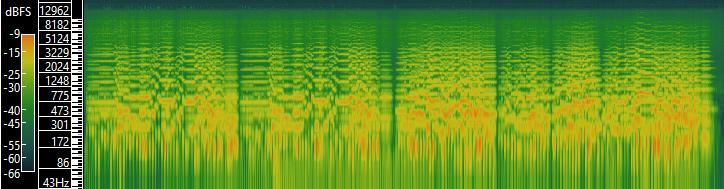
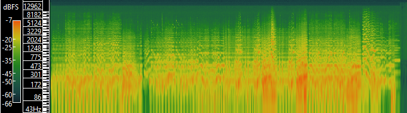
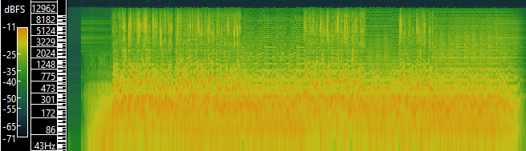
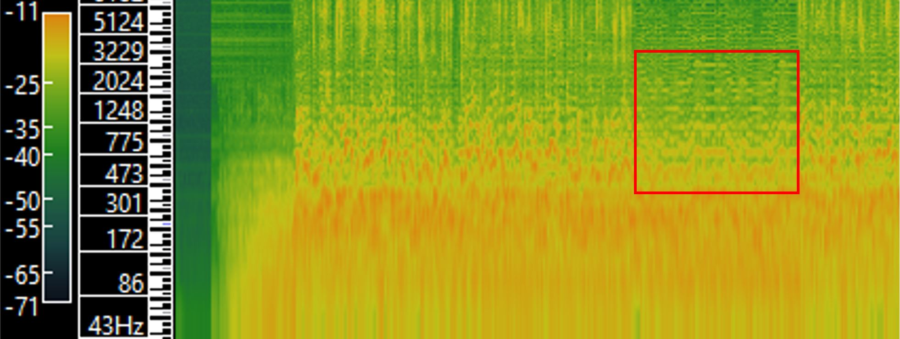
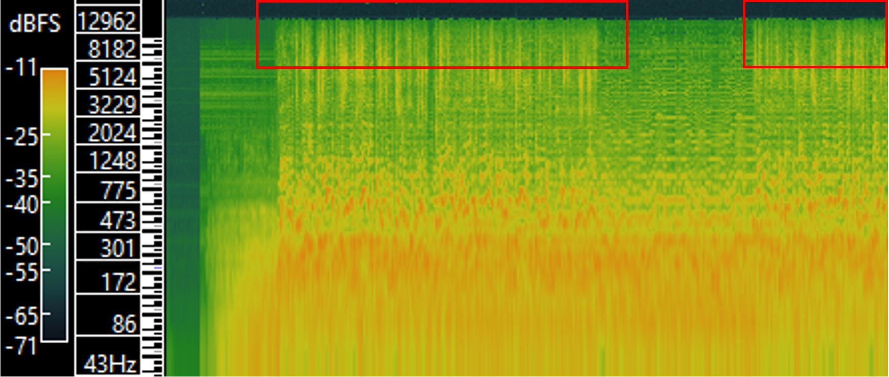

This lab explores the basics of visualising and analysing audio data.
The table below shows some of the metadata associated with three tracks from my dataset. I have continued to analyse Bach's Air and introduce two other tracks, Prokofiev's Romance from Lieutenant Kijé Suite, and Sting's 1985 song Russians which includes some musical references to the former.
| Bach Air 1068 | Lieutenant Kijé Suite, Romance | Russians | |
|---|---|---|---|
| Title | Orchestral Suite No. 3, BWV 1068, II. Air | Lieutenant Kijé Suite, Op. 60, II. Romance (Andante) | Russians |
| Artist | Boston Symphony Orchestra, Serge Koussevitzky, conductor | New York Philharmonic Orchestra, Dimitri Mitropoulos, conductor | Sting |
| Composer | J. S. Bach | Sergei Prokofiev | Sergei Prokofiev and Sting |
| Copyright info | Attribution-Noncommercial-Share Alike 3.0 | Attribution-Noncommercial-Share Alike 3.0 | none |
| Genre | Classical | Classical | Rock |
| Source | Victor 78rpm Album DM 1123, Digital transfer by F. Reeder (Internet Archive) | Columbia ML 5101 (x "Lp" 37765), Digital transfer by F. Reeder (Internet Archive) | Unknown - Internet Archive |
| Source Link | https://archive.org/details/J.S.BachOrchestralSuiteNo.3InDMajor/02.Ii.Air.mp3 | https://archive.org/details/PROKOFIEVLieutenantKijeSuite-Mitropoulos/02.+II.+Romance+(Andante).mp3 | https://archive.org/details/Sting_Russians |
| File/audio format | mp3 | mp3 | mp4 |
| Number of channels | 2 | 2 | 2 |
| Sample rate | 44100 Hz | 44100 Hz | 44100 Hz |
| Bits per second | 177k | 150k | 129k |
| Duration | 04:27 | 04:37 | 03:59 |
| Size | 5.67 MB | 4.97 MB | 23.6 MB |
| Publication Year | 1947 | 1956 | 1985 |
| Video Info | |||
| Frame width | 640 | ||
| Frame height | 480 | ||
| Data rate | 697kbps | ||
| Frame rate | 25fps |
Below are the spectrograms for each track made with Sonic Visualiser.
|  |  |  |
|---|---|---|
| Air from BWV 1068, Bach | Lieutenant Kijé Suite - Romance, Prokofiev | Russians, Sting |
Waveform analysis of an entire song gives only information about the volume over time. With time-frequency analysis, we can visualise the frequencies and overtones present in the audio. For example, in the spectrogram snapshot below, from Russians, we can follow the shape of the melody over time.
An advantage of time-frequency analysis is that we can determine when the audio has been down- or up-sampled by looking at the shape of the spectrum at high frequencies. For audio with lots of frequency interactions (ie. a dense track that covers a full frequency range), the spectrum will show high frequencies. Often, for a track with less interactions, the spectrum will appear to fade at high frequencies, as with Romance.
Comparing this spectrum with Sting's Russians, a more dense track, we see that the spectrum for Russians appears more "blocky" (the peaks don't fade at high frequencies). We can infer that the high frequencies have been chopped off (filtered out) when the audio file was generated, that is, the original track has been downsampled.
